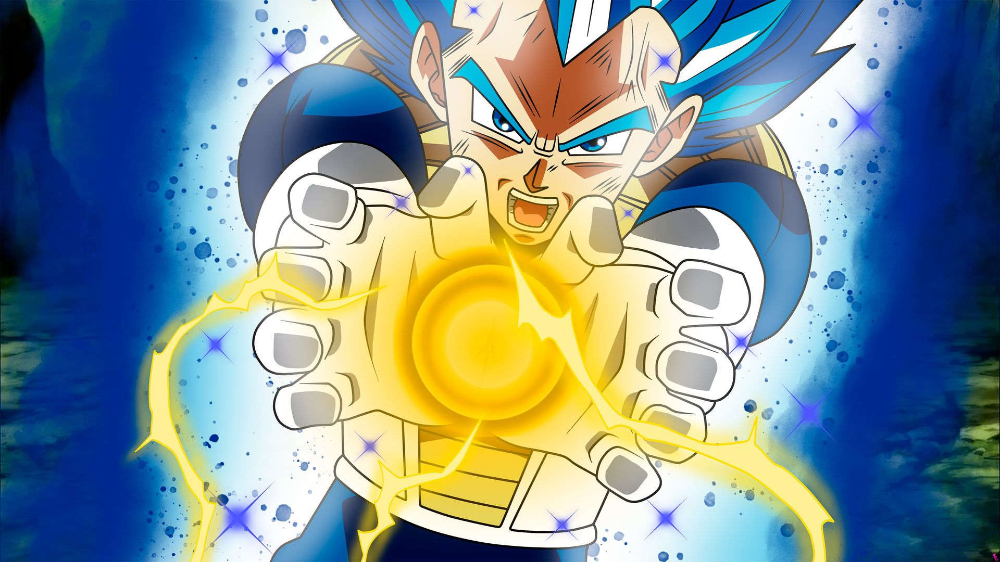

About The Prince
Vegeta is one of the main character in the Dragon Ball. Vegeta is the prince of the fallen Saiyan race. He is the eldest son of King, the older brother of Tarble, the husband of Bulma, the father of Trunks and Bulla. He know for his attitude and his Pride.
Friends and family of Vegita
Vegita's bestfriend and his family